-

"Sim sim, os deuses são muitos poderosos, governantes supremos da nossa vida. Mas, nem sempre foi assim. Está escrito em escrituras antigas, textos há muito tempo perdidos, os deuses que existem hoje antes pertenciam a mesma entidade. Uma mente primoridal, infinitamente mais poderosa do que qualquer deus. Foi essa mente que criou o que você está vendo, o chão, o mar, as luas, tudo. Mas isso demandou muita energia para essa mente, e ela se quebrou e se separou em pequenas partes menores, menos poderosas. Quando essas mentes menores se deram conta, aqui estava o mundo, já pronto. Os deuses não tiveram escolha a não ser governar o que já estava aqui. E aí é que está: sabe quando dizem que você sempre coloca um pouco de você em tudo o que faz? Um pouco da consciência primordial caiu em sua própria criação. Chamamos esse "pouco" de alma. Isso que nos diferencia de animais que não pensam: tivemos sorte."—Voron, gnomo andarilho
-
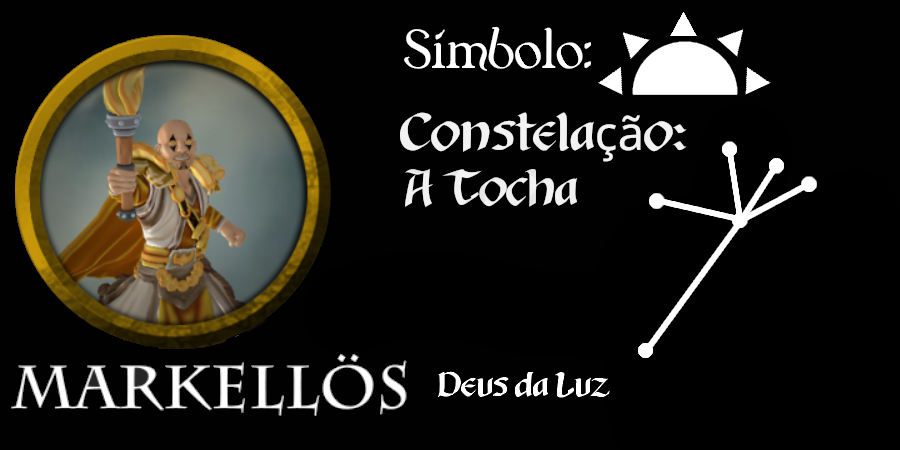
Markellös
"Não é apenas sobre a luz física, aquela que sai das tochas ou das lamparinas, nem da gigantesca luz no céu que ilumina o dia. Não, Markellös é o próprio conceito de luz. É nosso dever, como seus seguidores, de levar a sua luz para onde for possível. Sua luz, assim como uma tocha, pode guiar, clarear o caminho e proteger os necessitados, e, ao mesmo tempo..." Ele abre seus olhos, cinza como sua longa barba e continua: "Cegar aqueles que merecem".
—Saom, alto clérigo do Monastério da Luz da cidade de Sharne -
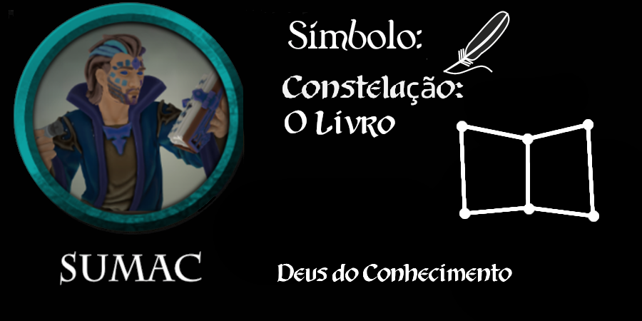
Sumac
"Todo conhecimento é poder. Este é nosso trabalho, como servos de Sumac. Documentando, escrevendo, buscando e redescobrindo aquilo que foi perdido, estamos trazendo de volta poder, antes perdido. Por isso, sempre desconfie daqueles que tentam esconder conhecimento de ti, não podem ter boas intenções"
—Luma, chefe da Alta Biblioteca do Lago -
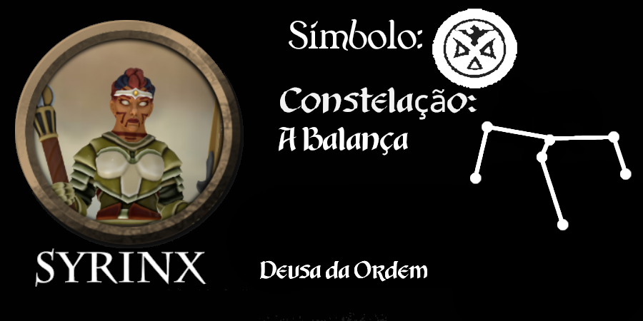
Syrinx
-
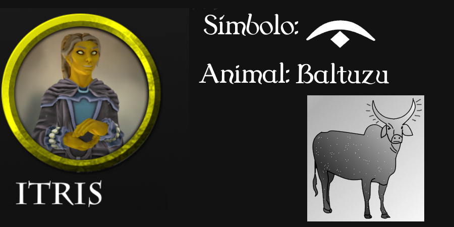
Itris
-

Nimrodel
-
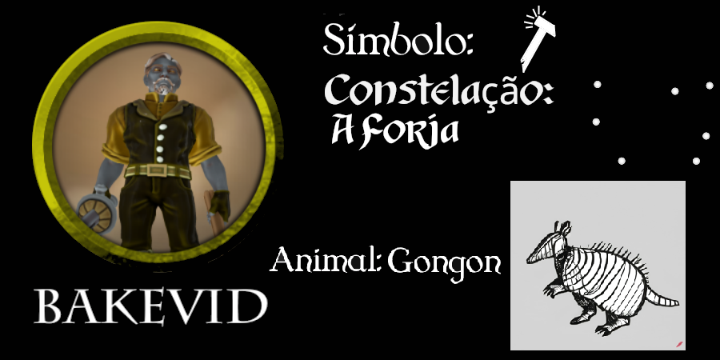
Bakevid
-
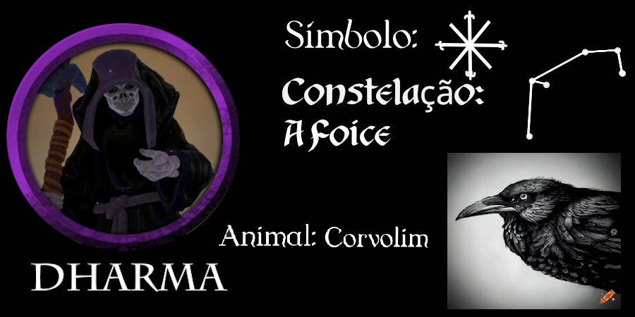
Dharma
"Hmm, sim, eu entendo o temor da maioria das pessoas com a morte. Para muitos significa o fim de suas riquezas, fim do contato com outras pessoas, e, mais importante, não sabem para onde vão. Eu digo que, sendo a única coisa que nos une completamente, a única constante em toda a vida... Eu digo que a morte é bonita pra caramba."
—Estalo, Kenku clérigo, encontrado nos arredores de Sharne -
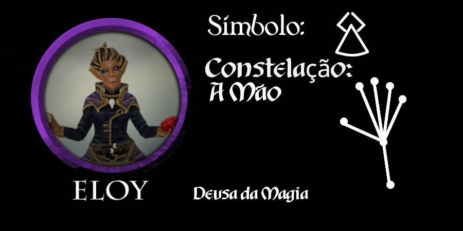
Eloy
-
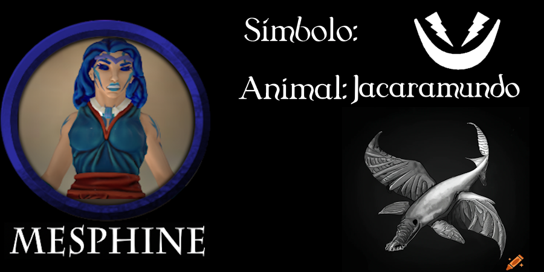
Mesphine
-
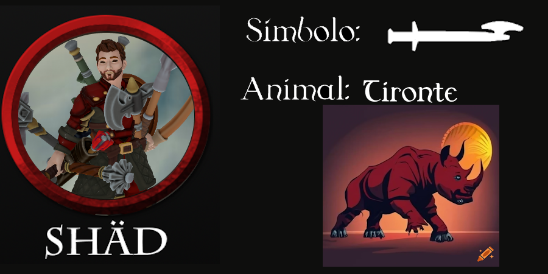
Shäd
-
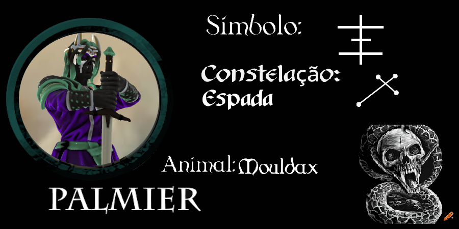
Palmier
-
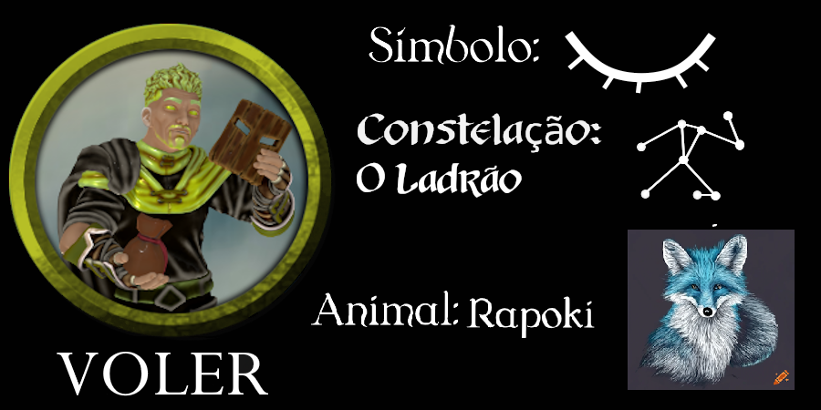
Z'oio
-
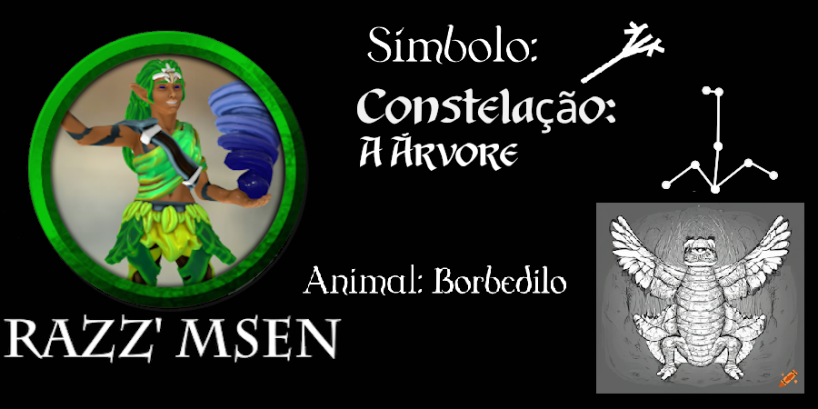
Razz'msen
"Muitas pessoas da cidade tem a ideia errada de natureza. Ficaram tanto tempo longe de uma floresta de verdades que esqueceram o que realmente é. Acham que viriam em um bosque cheio de borboletas e animaizinhos e viviriam em paz e harmonia. Hm.. Natureza de verdade arrancaria seu rosto e usaria como máscara. A natureza governa suas criações igualmente"
—Artag, Sacerdotisa do Templo Elevado -
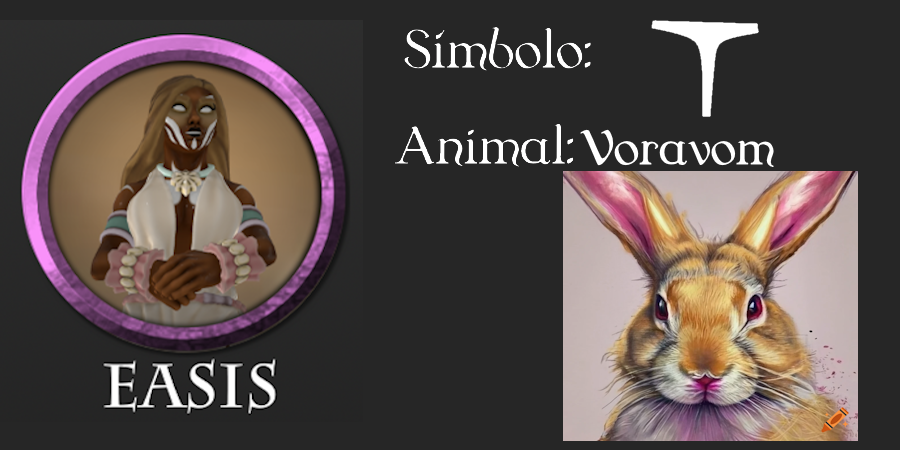
Easis
-

"Os planos incluem o Plano Material, Faéria e Umbra, ambos reflexos distorcidos do Plano Material, além dos planos elementais de Ar, Água, Terra e Fogo. Entre esses planos há uma região conhecida como Plano Astral. Os 14 fragmentos, depois adorados como deuses pelos seres do plano material, que seriam depois conhecidos como deuses, habitavam bolhas divinas que flutuavam no Plano Astral."—Voron, gnomo andarilho